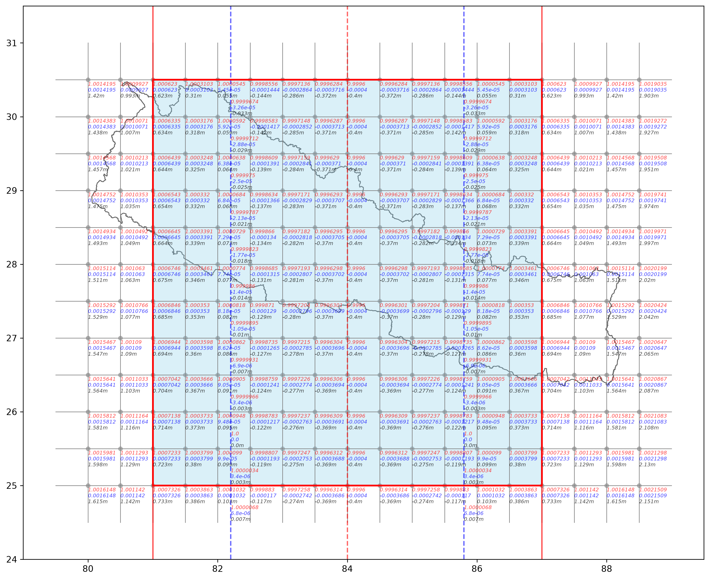

This is a basic one-page website. It demonstrates a minimal structure with an image and descriptive paragraph. This setup is sufficient for static deployment using GitHub Pages.

Customized UTM Zone, central meridain at 84deg E longitude. Six degree width. Observe the pattern of distortion factor. Note that six degree width zone with 84deg E longitude as central meridian doesnt completley cover the entire Nepal region. Note the west part and east part of Nepal beyond UTM zone shown in above figure.

The blockwise scale factor. The block is 0.5deg by 0.5deg. The mentioned scale factor is not actual scale factor at centroid or central point of each block. But the line scale factor, that line pass through mid longitude of each block. (equation: K = (k1+k2+4km)/6).
This is a basic one-page website. It demonstrates a minimal structure with an image and descriptive paragraph. This setup is sufficient for static deployment using GitHub Pages.